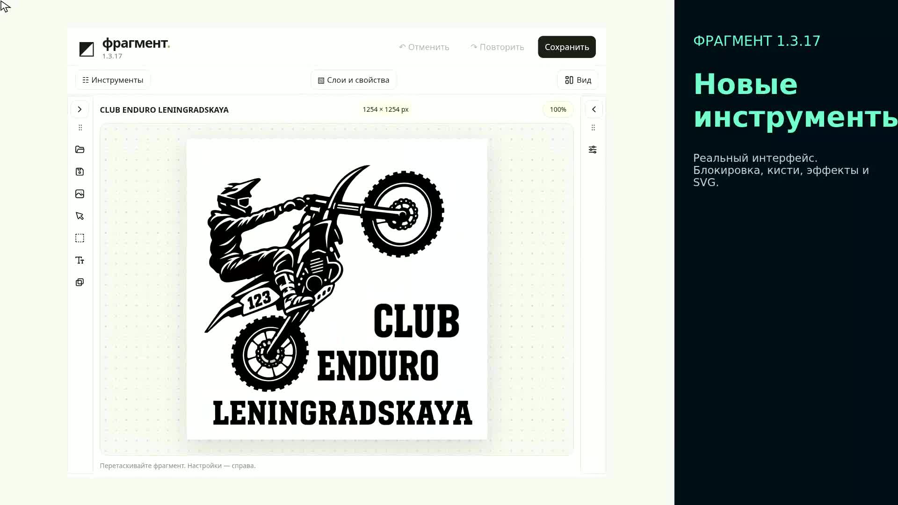
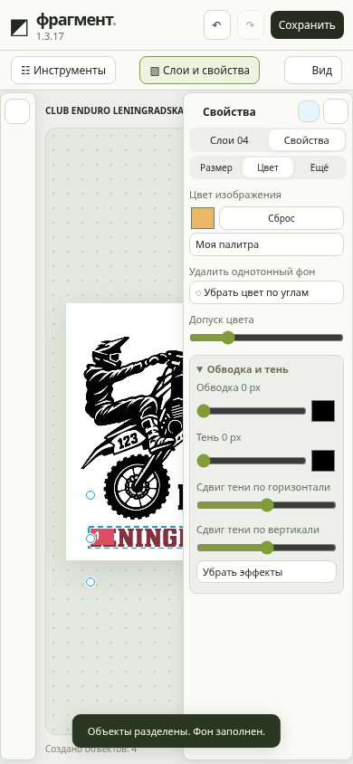
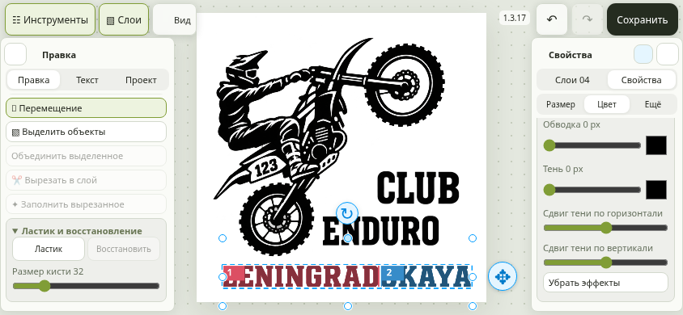
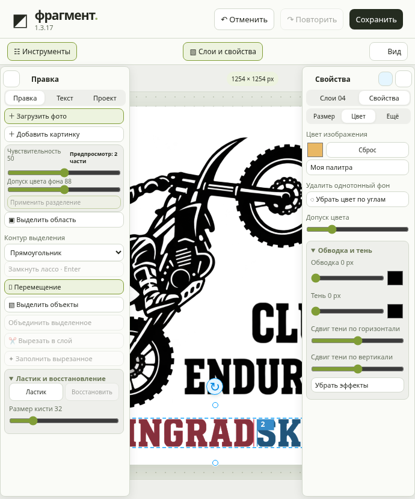
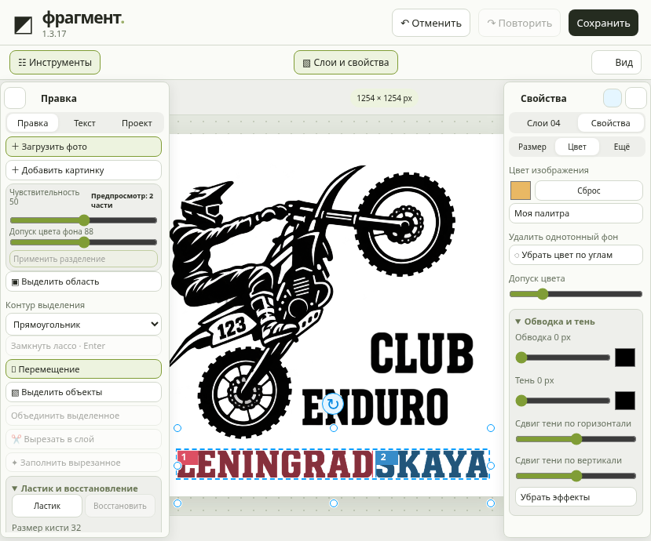

Открыть редакторФрагмент 1.3.17
Блокировка слоёв, ластик и восстановление, обводка и тень, шесть редактируемых заготовок, векторизация и SVG, проверка перед сохранением.
- В списке слоёв нажмите замок. Заблокированный слой нельзя двигать, растягивать, перекрашивать, удалять или разделять. Повторное нажатие снимает блокировку.
- Выберите один объект. Откройте «Правка → Ластик и восстановление», сотрите участок и восстановите его кистью. Соседние слои остаются. Каждая линия отменяется одним нажатием. Для группы сначала используйте «Разобрать».
- Откройте «Свойства → Цвет → Обводка и тень». Измените толщину, цвет и смещение. Сохраните проект или перезапустите приложение: эффекты и исходник для кисти остаются.
- В «Проект → Заготовки» выберите формат. Надписи и знак — отдельные редактируемые объекты. Одна отмена возвращает предыдущую композицию.
- В «Сохранить» выберите «SVG · векторизация», точность и число цветов. SVG содержит контуры без встроенной PNG. Векторизация упрощает цвета и мелкие детали; для фотографий обычно подходят PNG или WebP.
- Перед сохранением посмотрите сообщения о выходе за границы, небольшом разрешении для печати и белом фоне JPEG. Эти сообщения не запрещают сохранить файл.

Нажмите ▶ для запуска со звукомMP4 отдельно · Русские субтитры
Фактически проверено
Браузер: блокировка и разблокировка, защита редактирования, реальные движения кисти, восстановление, отмена/повтор, точное автосохранение с исходными пикселями кисти и эффектами, SVG с обработчиком и без Worker, визитка и её отмена. Десять размеров окна, три вида, открытые настройки кисти/эффектов и окна заготовок/SVG: все элементы доступны. SVG-тесты проверяют отверстия контуров, исходный логотип с мотоциклом и отсутствие встроенного растра.

Телефон · вертикально. Размеры окна в браузере.
Телефон · горизонтально. Размеры окна в браузере.
Раскрытый экран · вертикально. Размеры окна в браузере.
Раскрытый экран · горизонтально. Размеры окна в браузере.Android 15 · эмулятор Pixel 6
PASS: блокировка и снятие блокировки, ластик и восстановление реальным касанием, обводка и тень, поворот, SVG, проверка границ и заготовка визитки. После принудительного закрытия — точное восстановление изображения, слоёв, исходника кисти, эффектов, блокировки, выделения, параметров и числа действий отмены/повтора.
Исходная запись Android · Отчёт · GitHub Actions